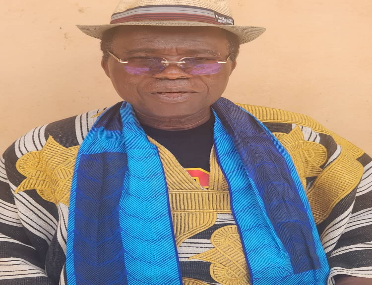
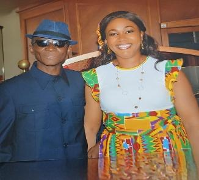
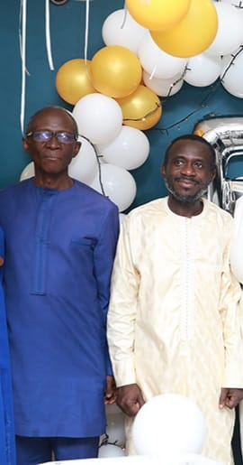
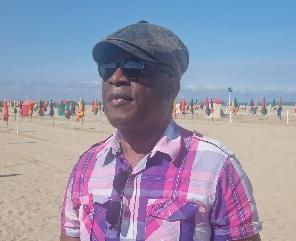
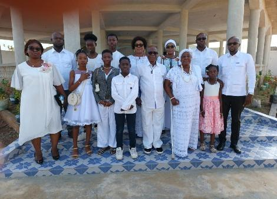
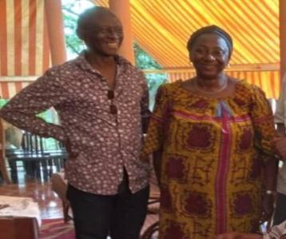

Dans l'unité, la discipline et la prospérité — pour un développement harmonieux et durable du village de Kadjokro.
Niché sur l'axe Toumodi-Yamoussoukro, Kadjokro est un village baoulé authentique où l'hospitalité ancestrale et l'esprit de modernité se rencontrent pour bâtir un avenir commun.

La vie communautaire de Kadjokro repose sur quatre grandes familles fondatrices, piliers indissociables de l'identité, de la gouvernance et de la cohésion du village depuis des générations.
« Un village sans chef est comme une case sans pilier. »
— Sagesse Baoulé · KadjokroDepuis sa fondation, Kadjokro a vu se succéder sept chefs de village — gardiens des traditions, guides de la communauté et artisans du développement local.





Après six longues années d'attente, le village de Kadjokro a vécu un moment solennel et historique : l'intronisation de son septième chef, Nanan Assamoi Konan 2, chef moderne et modèle.
« L'intronisation d'un chef n'est pas un simple acte administratif. C'est le renouvellement d'un pacte sacré entre les vivants, ceux qui nous ont précédés, et la terre qui nous nourrit. »
— Le Secrétariat du Conseil des NotablesNanan Assamoi Konan 2, N'DRI N'GUESSAN EUGÈNE à l'état civil, est issu de la grande famille N'GODO OSSOU. Son père, feu N'Goran N'Dri dit Bozia, Ancien Combattant de la Légion française, lui a inculqué les valeurs de respect, de dignité et de cohésion sociale qui fondent l'autorité traditionnelle.
Après un brillant parcours scolaire (BAC scientifique au Lycée Moderne de Dimbokro) et une Maîtrise en Sciences Économiques spécialisée en GRH et Économie Pétrolière, il bâtit une carrière exemplaire au sein des groupes BP, ELF/TOTAL et PETROCI où il finit comme Chef de Service Gaz Naturel.
Profondément attaché à sa communauté, il fonde la Compagnie culturelle « Tam Tam », crée en 2008 le Comité Local Croix-Rouge de Toumodi et sert comme Conseiller Municipal à la Mairie de Toumodi. Désigné par la notabilité et officiellement intronisé le 26 décembre 2025.
« Les pieds dans la tradition et la tête dans le modernisme. »
— Vision de Nanan Assamoi Konan 2La terre de Kadjokro est généreuse. Ses ressources naturelles et agricoles constituent le socle d'un développement économique durable pour toute la communauté.
Kadjokro vous accueille avec la chaleur légendaire du peuple Baoulé. Voici comment trouver notre village depuis les villes principales.